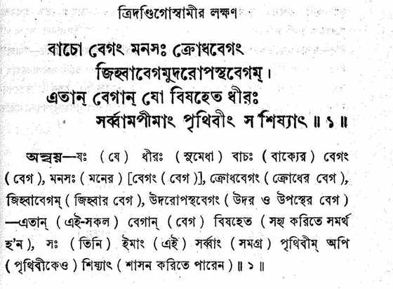

Text 1
unverified text
বাচো বেগং মনসঃ ক্রোধবেগংজিহ্বাবেগমুদরোপস্থবেগম্।এতান্ বেগান্ যো বিষহেত ধীরঃসর্ব্বামপীমাং পৃথিবীং সশিষ্যাৎ ॥১॥
वाचो वेगं मनसः क्रोध-वेगंजिह्वा-वेगम् उदरोपस्थ-वेगम्एतान् वेगान् यो विषहेत धीरःसर्वाम् अपीमां पृथिवीं स शिष्यात्
Devanagari: converted from IAST by script
vāco vegaṁ manasaḥ krodha-vegaṁjihvā-vegam udaropastha-vegametān vegān yo viṣaheta dhīraḥsarvām apīmāṁ pṛthivīṁ sa śiṣyāt
Original
The same verse in three forms.
Heading in the 1942 editionত্রিদণ্ডিগোস্বামীর লক্ষণ
- Bengali scriptunverified text
- IAST transliterationunverified text
- Devanagariconverted from IAST by script



Commentaries
6 texts from the 1942 edition, 5 English texts awaiting permission.
Anvaya and translationGauḍīya Maṭha editionBengali486 characters
যঃ (যে) ধীরঃ (সুমেধা) বাচঃ (বাক্যের) বেগং (বেগ), মনসঃ (মনের) [বেগং (বেগ)], ক্রোধবেগং (ক্রোধের বেগ), জিহ্বাবেগম্ (জিহ্বার বেগ), উদরোপস্থবেগং (উদর ও উপস্থের বেগ) -এতান্ (এই-সকল) বেগান্ (বেগ) বিষহেত (সহ্য করিতে সমর্থ হ'ন), সঃ (তিনি) ইমাং (এই) সর্ব্বাং (সমগ্র) পৃথিবীম্ অপি (পৃথিবীকেও) শিষ্যাৎ (শাসন করিতে পারেন) ॥ ১॥ শ্রীল-রূপগোস্বামি-কৃত
যে ধীর মানব বাক্যবেগ, মনোবেগ, ক্রোধ-বেগ, জিহ্বাবেগ, উদরবেগ, ও উপস্থবেগ- এই ছয় বেগ সহ্য করিতে সমর্থ হ'ন, তিনি এই সমগ্র পৃথিবীকেও শাসন করিতে পারেন ॥১॥
uncorrected OCR
Upadeśa-prakāśikā-ṭīkāRādhāramaṇa dāsa GosvāmīSanskrit in Bengali script1,316 characters
(শ্রীরাধারমণদাস-গোস্বামি-কৃতা) শ্রীরাধারমণো জয়তি। শ্রীচৈতন্যং প্রপদ্যেহহং সাবধূতং সভক্তকম্। সাদ্বৈতং বিশ্বশক্তীনাং নিধানীকৃতরূপকম্। শ্রীকৃষ্ণরাধাচরণাজসেবনে সদোদ্যতং তদ্বিধিপাবিতাখিলম্। শ্রীরূপগোস্বামিনমাদরেণ তং শৃঙ্গার-সর্ব্বস্বমথোহহমাশ্রয়ে। শ্রীমদেগাপালভট্টকং তং দীনানুগ্রহকাতরম্। নমামি কৃষ্ণচৈতন্যং ভক্ত্যা তাড়িতভূতলম্ ॥ গোপীনাথঞ্চ তচ্ছিষ্যং রাধারমণসেবকম্। প্রপদ্যেহং মুদা গৌরভক্ত্যানেকস্য পালকম্ ॥ যো হি জীবোপদেশস্ত শ্রীমদ্রূপপ্রকাশিতঃ। সাধকানামুপকুতো তদ্ব্যাখ্যারভ্যতে ময়া। শ্রীমজ্জীবনলালস্য পৌত্রো ভূত্যোহপি কশ্চন। তমেব স্বগুরুং নত্বা ব্যাখ্যামারভতে মিতাম্। তত্র প্রথমতঃ “শোকামর্ষাদিভির্ভাবৈরাক্রান্তং যস্য মানসম্। কথং তত্র মুকুন্দস্য স্ফুর্ত্তিসম্ভাবনা ভবেৎ।” ইতি-ভাগবত-কারিকা-প্রতিপন্ন-কৃষ্ণক্ষ র্ত্তিপ্রতিবন্ধক বান্ধেগাদি-নিয়মান্ শিক্ষয়তি-“বাচঃ” ইতি। সর্ব্বাং পৃথ্বীং শিষ্যাদিতি বাগাদিবেগ-সহনোপযোগেন সংবৃদ্ধয়া ভক্ত্যা সর্ব্বপাবনত্বাৎ। তদ্ভক্তিযুক্তো ভুবনং পুনাতীতিবৎ সর্ব্বোংপি জনস্তস্য শিষ্য এবেত্যর্থঃ। তেন চ তত্তদ্বেগসহনস্য ভক্তিপ্রবেশোপযোগিত্বমেব, ন তু সাধনত্বম্। তঙ্গাঃ স্বপ্রকাশত্বাভ্যুপগমাদেবেতি ভাবঃ ॥ ১ ॥ শ্রীল-ভক্তিবিনোদ-কৃত-ভাষা গুরুকৃপা-বলে লভি' সম্বন্ধ-বিজ্ঞান। কৃতি-জীব হয়েন ভজনে যত্নবান্ ॥ সেই জীবে শ্রীরূপ-গোস্বামি-মহোদয়। 'উপদেশামৃতে' ধন্য করেন নিশ্চয় ॥ গৃহী গৃহত্যাগী ভেদে দ্বিপ্রকার জনে। উপদেশ-ভেদ বিচারিবে বিজ্ঞগণে ॥ গৃহি-প্রতি এই সব উপদেশ হয়। গৃহত্যাগি-প্রতি ইহা পরাকাষ্ঠাময় ॥
uncorrected OCR
BhāṣāBhaktivinoda ṬhākuraBengali verse261 characters
বাক্যবেগ, মনোবেগ, ক্রোধবেগ আর। জিহ্বাবেগ, উদর-উপস্থবেগ ছার ॥ এই ছয় বেগ সহি' কৃষ্ণনামাশ্রয়ে। জগৎ শাসিতে পারে পরাজিয়া ভয়ে ॥ কেবল শরণাগতি কৃষ্ণভক্তিময়। ভক্তিপ্রতিকূল-ত্যাগ তা'র অঙ্গ হয় ॥ ছয় বেগ সহি' যুক্ত-বৈরাগ্য-আশ্রয়ে। নামে অপরাধশূন্য হইবে নির্ভয়ে ॥ ১ ॥
uncorrected OCR
Pīyūṣa-varṣiṇī-vṛttiBhaktivinoda ṬhākuraBengali2,757 characters
(শ্রীল-ভক্তিবিনোদ-ঠকুর-কৃতা) শ্রীশ্রীগোক্রমচন্দ্রায় নমঃ ॥ যৎকৃপাসাগরোভূতমুপদেশামৃতং ভুবি। শ্রীরূপেণ সমানীতং গৌরচন্দ্রং ভজামি তম্ ॥ নত্বা গ্রন্থপ্রণেতারং টীকাকারং প্রণম্য চ। ময়া বিরচ্যতে বৃত্তিঃ 'পীযূষ-পরিবেশনী' । "অন্যাভিলাষিতাশূন্যং জ্ঞানকর্ম্মাদ্যনাবৃতম্। আনুকূল্যেন কৃষ্ণানুশীলনং ভক্তিরুত্তমা।”(শ্রীভক্তিরসামৃতসিন্ধু ১।১।৯)। এই কারিকাসম্মত আনুকূল্যের সঙ্কল্প ও প্রাতিকূল্যের বর্জ্জন-সহকারে ভক্তির অনুশীলনই ভজনপরায়ণ ব্যক্তিদিগের নিতান্ত প্রয়োজন। আনুকূল্যের সঙ্কল্প ও প্রাতিকূল্যের বর্জন শুদ্ধা ভক্তির সাক্ষাৎ অঙ্গ নয়, কিন্তু ভক্তির অধিকারদাতা শরণাপত্তিলক্ষণশ্রদ্ধার অঙ্গদ্বয়। যথা,—“আনুকূল্যস্য সঙ্কল্পঃ প্রাতিকূল্যস্য বর্জনম্। 8 শ্রীল-রূপগোস্বামি-কৃত রক্ষিষ্যতীতি বিশ্বাসো গোপ্তত্বে বরণং তথা। আত্মনিক্ষেপ-কার্পণ্যে ষড় বিধা শরণাগতিঃ ॥”- (শ্রীবৈষ্ণবতন্ত্র-বাক্য)। এই শ্লোকে প্রাতিকূল্যবর্জনের ব্যবস্থা। বাক্যের বেগ, মনের বেগ, ক্রোধের বেগ, জিহ্বার বেগ, উদরের বেগ ও উপস্থের বেগ-এই ছয়টী বেগ যে-ব্যক্তি বিশেষরূপে সহ্য করিতে সমর্থ হ'ন, তিনি এই সমস্ত পৃথিবী শাসন করিতে পারেন। “শোকামর্ষাদিভির্ভাবৈরাক্রান্তং যস্য মানসম্। কথং তত্র মুকুন্দস্য স্ফুর্ত্তিসম্ভাবনা ভবেৎ ॥”- (শ্রীপদ্মপুরাণ)। এই শ্লোকের তাৎপর্য্যে জানা যায় যে, কাম, ক্রোধ, লোভ, মোহ, মদ ও মৎসরতা-এই সকল উৎপাত মানবের মনে সর্ব্বদা উদিত হইয়া বাক্যের বেগ অর্থাৎ ভূতোদ্বেগকারী বচনপ্রয়োগদ্বারা; মানস-বেগ অর্থাৎ নানাবিধ মনোরথদ্বারা, ক্রোধের বেগ অর্থাৎ রূঢ়বাক্যাদি-প্রয়োগদ্বারা, জিহ্বার বেগ অর্থাৎ মধুর, অম্ল, কটু, লবণ, কষায়, তিক্ত-ভেদে ষড় বিধ রস-লালসাদ্বারা; উদরের বেগ অর্থাৎ অত্যন্ত ভোজন-প্রয়াসদ্বারা ও উপস্থের বেগ অর্থাৎ স্ত্রী-পুরুষ-সংযোগ-লালসাদ্বারা মনকে অসদ্বিষয়ে আবিষ্ট করে। সুতরাং চিত্তে ভক্তির শুদ্ধ অনুশীলন হয় না। ভজন-প্রয়াসী ব্যক্তির চিত্তকে ভক্তি-প্রবণ করিবার জন্য অস্মত্তত্ত্বাচার্য্য শ্রীমদ্রূপগোস্বামী এই শ্লোকটির সর্ব্বাগ্রে অবতারণ করিয়াছেন। উক্ত ষড় বর্গনিবৃত্তি করিবার চেষ্টাই যে ভক্তিসাধন, তাহা নহে; কিন্তু ভক্তিমন্দিরে প্রবেশের যোগ্যতা-সাধন-মাত্র। কর্ম্মমার্গে ও জ্ঞানমার্গে এই ষড় বর্গ-নিবৃত্তির উপদেশ আছে। তত্তৎ-সাধনপ্রণালী ভক্তের পালনীয় নয়। কৃষ্ণনামরূপচরিতাদি-শ্রবণ-কীর্তন ও অনুস্মরণই সাক্ষাৎ-ভক্তি। ভক্তির অনুশীলন-সময়ে উক্ত ষড়বেগ আসিয়া অপক্ষ সাধকের সাধনে প্রতিবন্ধকতা আচরণ করে। সেই সময় ভক্ত অনন্যশরণাগতির ভাবে দশ নামাপরাধ-দমনচেষ্টার মধ্যে নামবল-কৃপায় এই প্রতিবন্ধকও শুদ্ধভক্তসঙ্গ-প্রভাবে দূর করিতে সমর্থ হ'ন। তদাশ্রয়-অপরাধ; যথা,—“শ্রুত্বাপি নাম-মাহাত্ম্যং যঃ প্রীতিরহিতোহধমঃ। অহংমমাদিপরমো নামি সোহপ্যপরাধকৃৎ ॥”- (শ্রীপদ্মপুরাণ)। ভক্তগণ যুক্ত-বৈরাগ্যপরায়ণ, অর্থাৎ শুষ্কবৈরাগ্যের অধিকারী ন'ন। সুতরাং বিষয়সংস্পর্শাদি-পরিত্যাগের ব্যবস্থা তাঁহাদের সম্বন্ধে নাই। মনের বেগ যে অসতৃষ্ণা, তাহা রহিত হইলেই নেত্র-বেগ, ঘ্রাণ-বেগ ও শ্রবণ-বেগ নিয়মিত হয়। অতএব ষড়বেগ-জয়কারী আত্মানুগত ব্যক্তি পৃথ্বীজয়ী হ'ন। এই বেগসহনোপদেশ কেবল গৃহিভক্তের পক্ষে; কেন না, গৃহত্যাগীর পক্ষে পরাকাষ্ঠারূপ সম্পূর্ণ বেগাদিবর্জন গৃহত্যাগের পূর্ব্বেই সিদ্ধ হইয়াছে ॥ ১॥ শ্রীল-সরস্বতীঠাকুর-কৃত-ভাষা
uncorrected OCR
PadyānuvādaBhaktisiddhānta SarasvatīBengali verse255 characters
কৃষ্ণেতর-কথা-বাবেগ তা'র নাম। কামের অতৃপ্তে ক্রোধবেগ মনোধাম ॥ সুস্বাদু-ভোজনশীল জিহ্বাবেগ-দাস। অতিরিক্ত ভোক্তা যেই উদরেতে আশ॥ যোষিতের ভৃত্য স্ত্রৈণ কামের কিঙ্কর। উপস্থবেগের বশে কন্দর্পতৎপর। এই ছয় বেগ যা'র বশে সদা রয়। সে জন গোস্বামী, করে পৃথিবী বিজয় ॥ ১ ॥
uncorrected OCR
AnuvṛttiBhaktisiddhānta SarasvatīBengali4,533 characters
3 [শ্রীল-ভক্তিসিদ্ধান্ত-সরস্বতী-প্রণীতা] দয়ানিধি গৌরহরি, কলি-জীবে দয়া করি', 'শিক্ষাষ্টকে' শিখাইল ধর্ম্ম। তাঁহার শ্রীমুখ হ'তে, যা' শিখিল ভালমতে, প্রভু রূপ জানি' সেই মর্ম্ম ॥ শ্রীল-রূপগোস্বামি-কৃত জীবের কল্যাণ-খনি, প্রেমরত্ন-মহামণি, গ্রন্থরত্ন সরলে লিখিল। গৌরভক্ত-কণ্ঠহার, 'উপদেশামৃত' সার, রূপানুগে রূপ নিজে দিল ॥ : কাল্পনিক নব্যমত, নাম বা করিব কত, ভক্তিপথে যা'রে বলে ভেল। মায়াবাদী কৃষ্ণ ত্যজি', মুখে শুধু গোরা ভজি', ভোগের বিলাসে বিন্ধি' শেল ॥ ক্লেশ পায় অবিরত, জড়কামে হ'য়ে হত, 'উপদেশামৃতে' মানে যম। শ্রদ্ধা করি' পাঠ করি', লাভ করে গৌরহরি, জানে রূপ-পদ বিনা ভ্রম ॥ রূপানুগজন-পদ, লভিবারে সুসম্পদ, রূপানুগজন-প্রীতি তরে। রূপ-উপদেশামৃত, শুদ্ধ-হরিজনাদৃত, অযোগ্যেও সমাশ্রয় করে ॥ গৌরকিশোর প্রভু, ভকতিবিনোদ বিভু, শুদ্ধভক্তি যেই প্রচারিল। সেই শুদ্ধভক্তি-সূচী, বদ্ধজীব যা'হে শুচি, পাইবার তরে এক তিল ॥ : রূপানুগ-পূজ্যবরা, শ্রীবার্ষভানবী হরা, তাঁহার দয়িতদাস-দাস। রূপানুগ-সেবা আশ, শ্রীব্রজপত্তনে বাস, 'অনুবৃত্তি' করিল প্রকাশ ॥ পার্থিব অভিনিবেশে ত্রিবিধ বেগ দৃষ্ট হয়। বাগবেগ, মানস-বেগ ও শারীর-বেগ। বেগত্রয়ের হস্তে পতিত হইলে জীব মঙ্গল লাভ করিতে পারেন না। তজ্জন্য বেগসহনশীল জীব পার্থিব বস্তুর বশীভূত হইবার পরিবর্তে পৃথিবীকে জয় করিতে সমর্থ হ'ন। 'বাক্যের বেগ' বলিতে নির্বিশেষবাদীর শাস্ত্রীয় জল্পনা-সমূহ, কর্ম্মকাণ্ড-নিরতের কর্ম্মফলের শাস্ত্রযুক্তি ও কৃষ্ণেতর-অভিলাষীর যথেচ্ছ-ভোগপর অনুভব-জন্য বাক্যাবলী। ভগবানের সেবনোপযোগী বাক্সমূহের প্রবৃত্তিই কেবল বেগসহনের ফল, উহাই বাগবেগ নহে। অব্যক্ত বাগ বেগ উচ্চার্য্যমাণ না হইলেও কৃষ্ণেতর-বিষয়ক অনুভব-জন্য বাচেষ্টা-বিশেষ। 'মনের বেগ' দ্বিবিধঅবিরোধ-প্রীতি ও বিরোধযুক্ত ক্রোধ। মায়াবাদীর বিশ্বাসে প্রীতি, কর্মবাদীর বিশ্বাসে আদর ও অন্যাভিলাষীর মতে বিশ্বাস-এই তিন প্রকার অবিরোধ-প্রীতি। জ্ঞানী, কর্মী ও অন্যাভিলাষীর চেষ্টা দেখিয়া নিরপেক্ষ অবস্থানই মনের অব্যক্ত অবিরোধ-প্রীতি-বেগ। অন্যাভিলাষের অতৃপ্তি-জন্য, কর্ম্মফললাভের অতৃপ্তিতে ও মুক্তির অপ্রাপ্তি-হেতু 'ক্রোধ'। কৃষ্ণলীলা-চিন্তাই মানসবেগ-সহনের ফল; উহাই মানসবেগ নহে। শারীরবেগ ত্রিবিধ-'জিহ্বাবেগ', 'উদরবেগ' ও 'উপস্থবেগ'। ষড় রসের কোন রস-লালসায় উত্তেজিত হইয়া সকল-প্রকার পণ্ডমাংস, মৎস্য, কর্কট, ডিম্ব, শুক্রশোণিতজাত শবশ্রেণীস্থ অমেধ্য দ্রব্য, বর্দ্ধনশীল উদ্ভিদ, লতা ও শাক, গব্য-প্রকারভেদ প্রভৃতি গ্রহণ করিবার লালসাই জিহ্বার চেষ্টা। ..... শ্রীল-রূপগোস্বামি-কৃত অতিরিক্ত লঙ্কা ও অম্ল প্রভৃতি সাধুগণ পরিত্যাগ করেন। হরিতকী, সুপারি প্রভৃতি তাম্বুলোপকরণ, তাম্বুল, ধূম্রপান, গঞ্জিকাদি উৎকট ধূমপান, অহিফেন, মদ্য-প্রভৃতি মাদকদ্রব্য-সেবন জিহ্বা-বেগের অন্তর্ভুক্ত। ভগবানের উচ্ছিষ্টাদি-গ্রহণপূর্ব্বক শুদ্ধ-জীব জিহ্বাবেগের হস্ত হইতে পরিত্রাণ লাভ করেন। ভগবন্নৈবেদ্য পরমাস্বাদকর হইলেও উহা প্রসাদভোজীর নিকট জিহ্বাবেগ নহে। পরন্তু ভগবানের বিলাস-সহচর উত্তম সুস্বাদু দ্রব্যসমূহ, নিজ জড়ভোগ-বাসনার উদ্দেশে প্রসাদের ছলে গ্রহণ করিবার চাতুরী উপস্থিত হইলে, উহাও জিহ্বাবেগের অন্তর্গত। ধনীর গৃহস্থিত দেবতার উদ্দেশে প্রদত্ত বহুমূল্য পরমাস্বাদ্য উপকরণাদি অকিঞ্চন বৈষ্ণবের গ্রহণ করিবার পিপাসা জিহ্বা-বেগের অন্তর্গত। জিহ্বাবেগ বর্দ্ধন করিতে হইলে নানাপ্রকার অসচ্চেষ্টা ও অসৎসঙ্গ ঘটিবার সম্ভাবনা। “জিহ্বার লালসে যেই ইতি-উতি ধায়। শিশ্লোদরপরায়ণ কৃষ্ণ নাহি পায়।” “ভাল না খাইবে, আর ভাল না পরিবে।”(শ্রীচৈঃ চঃ অঃ ৬॥২২৭, ২৩৬)। উদরবেগ অনেক সময় জিহ্বাবেগেরই সহচর। উদরবেগ-গ্রস্ত ব্যক্তি অধিকাংশ সময়ে রোগবিশিষ্ট। অধিকভোজনচেষ্টা করিতে গেলে নানাপ্রকার সাংসারিক অসুবিধা উপস্থিত হয়। অতিভোজী উপস্থবেগের দাস। কৃষ্ণপ্রসাদ-সেবা ও কৃষ্ণব্রত একাদশ্যাদি-পালনে ও কৃষ্ণসেবা-প্রবৃত্তিতে উদরবেগ নিবৃত্ত হয়। উপস্থবেগ দ্বিবিধ-বৈধ ও অবৈধ। প্রাপ্তবয়স্ক ব্যক্তি শাস্ত্রীয় বিধিমতে নিশিচর্য্যা-পালনপর হইয়া গৃহস্থাশ্রমের ধর্ম রক্ষা করিয়া বৈধচেষ্টায় উপস্থবেগ সংযত করেন। অবৈধ উপস্থবেগ নানাবিধ-শাস্ত্রীয় সমাজবিধি ত্যাগ করিয়া পরস্ত্রী-গ্রহণ, অষ্ট-প্রকার ইন্দ্রিয়সুখ-পিপাসা, কৃত্রিম মিথ্যাচার, অবৈধ উপায়ে ইন্দ্রিয়বৃত্তি-চরিতার্থতা। গৃহস্থ ও উদাসীন উভয়েরই জিহ্বা, উদর ও উপস্থ-বেগের হস্ত হইতে মুক্ত হওয়া কর্তব্য। শীউপদেশামৃত-২য় শ্লোক শীল জগদানন্দ পণ্ডিত 'প্রেমবিবর্ত' গ্রন্থে লিখিয়াছেন,- “বৈরাগি ভাই! গ্রাম্যকথা না শুনিবে কাণে। গ্রাম্যবার্তা না কহিবে যবে মিলিবে আনে ॥ স্বপনেও না কর ভাই! স্ত্রী-সম্ভাষণ। গৃহে স্ত্রী ছাড়িয়া ভাই! আসিয়াছ বন । যদি চাহ প্রণয় রাখিতে গৌরাঙ্গের সনে। ছোট হরিদাসের কথা থাকে যেন মনে ॥ ভাল না খাইবে আর ভাল না পরিবে। হৃদয়েতে রাধাকৃষ্ণ সর্ব্বদা সেবিবে ॥” বাক্য, মন ও শরীরের পূর্ব্ব-কথিত ষড় বিধচেষ্টা যিনি সম্যরূপে সহ্য করিতে সমর্থ, তিনিই 'গোস্বামী'। বেগযক্কের হস্তে অবস্থিত থাকিলে জীব 'গোদাস'-শব্দবাচ্য হ'ন। গোস্বামিগণই কৃষ্ণসেবক। গোদাস-গণ মায়ার দাস; সুতরাং কৃষ্ণভক্ত হইতে হইলে গোস্বামীর চরণানুগত্য ব্যতীত অন্য উপায় নাই। অদান্তগো কখনই হরিসেবক হইতে পারেন না। শ্রীপ্রহলাদ বলিয়াছেন,- “মতির্ন কৃষ্ণে পরতঃ স্বতো বা মিথোহভিপদ্যেত গৃহব্রতানাম্। অদান্তগোভিবিশতাং তমিস্রং পুনঃপুনশ্চর্বিতচর্ব্বর্ণানাম্ ॥ ন তে বিদুঃ স্বার্থগতিং হি বিষ্ণুৎ দুরাশয়া যে বহিরর্থমানিনঃ ॥”- (শ্রীভাঃ ৭।৫।৩০-৩১) ॥ ১ ॥
uncorrected OCR
English texts of Gaudiya Vedanta Publications, awaiting permission
Anvaya and translation, English
about 850 characters
Upadeśa-prakāśikā-ṭīkā, English
about 4,200 characters
Bhāṣā, English translation
about 5,200 characters
Pīyūṣa-varṣiṇī-vṛtti, English
about 6,700 characters
Anuvṛtti, English
about 12,100 characters
Śrīla Prabhupāda
The Bhaktivedanta Book Trust publishes the translation and purport. Until it gives permission they are linked here, not copied.
Quoted by Śrīla Prabhupāda in 18 places
In the books
In lectures, conversations and articles
- Lecture on BG 6.25-29 -- Los Angeles, February 18, 1969
- Lecture on BG 2.3 -- London, August 4, 1973
- Lecture on SB 1.16.20 -- Hawaii, January 16, 1974
- Morning Walk -- March 17, 1974, Vrndavana
- Lecture on SB 2.1.2 -- Vrndavana, March 17, 1974
- Morning Walk -- June 14, 1974, Paris
- 760122 - Morning Walk - Mayapur
- Excerpt from Sannyasa Initiation of Viraha Prakasa Swami -- Mayapur, February 5, 1976
- Conversation with Clergymen -- June 15, 1976, Detroit
- Lecture on SB 7.6.6 -- New Vrindaban, June 22, 1976
- Conversation with Dr. Shaligram Shukla ( Part 2 ) -- July 5, 1976, Washington, D.C.
- Room Conversation -- August 16, 1976, Bombay
- Lecture on SB 5.6.2 -- Vrndavana, November 24, 1976
- Roof Conversation -- January 5, 1977, Bombay
In the sister site
Cite this verse
This address will not change. The text is unverified.
acaryapedia.org/upadesamrta/1
Rūpa Gosvāmī. Upadeśāmṛta, text 1. Acaryapedia. https://acaryapedia.org/upadesamrta/1